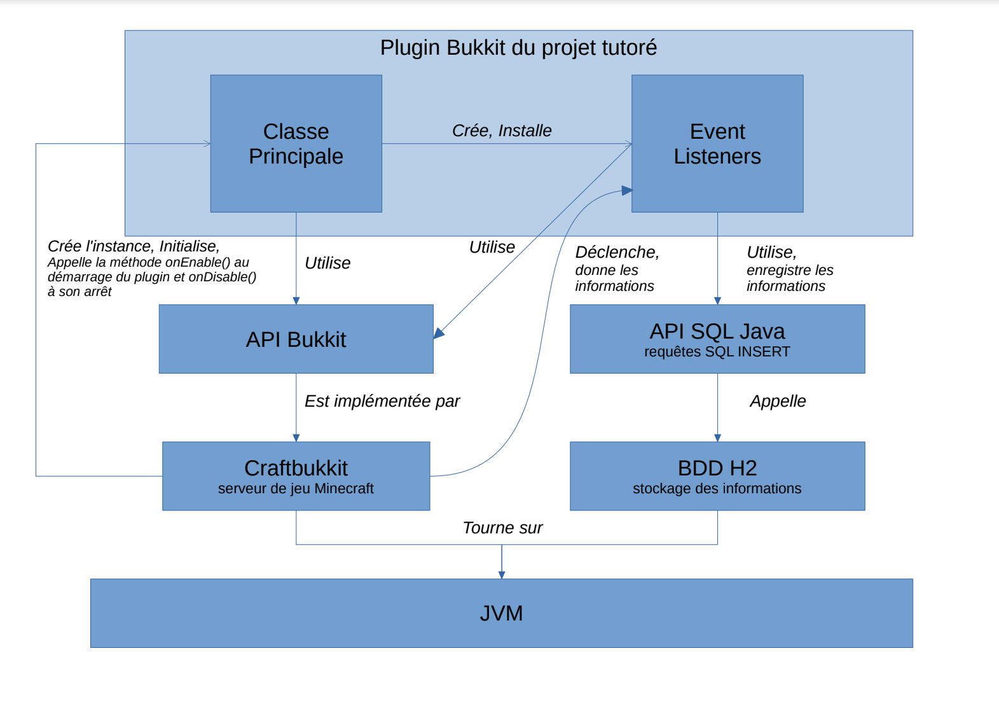

Pour commencer, nous avons choisi avec le commanditaire les évènements à analyser pour répondre au mieux à la problématique. Nous avons enregistré des informations sur :
Pour récolter les données, nous avons appris à programmer en Java pour réaliser un plugin, une extension du serveur de jeu, que nous avons utilisé pour enregistrer ce qu'il se passait sur les serveurs de jeu.
Le schéma ci-dessous explique l'architecture technique de notre plugin. Il se base sur le logiciel serveur Craftbukkit, développé par la communauté Minecraft et fournissant une interface de programmation pour créer des plugins. Notre plugin utilise des "Event Listeners" : ce sont des fonctions qui sont appellées lorsqu'un évènement survient. Lorsque nos "listeners" sont appelés, ils enregistrent les informations de l'évènement dans une base de données locale.
Nous avons choisi le moteur de base de données H2. Il s'agit d'un moteur léger, écrit en Java, et pouvant facilement être inclus dans un plugin comme le notre. Cela nous évite de demander aux administrateurs des serveurs de mettre en place une base de données plus lourde comme MySQL.
